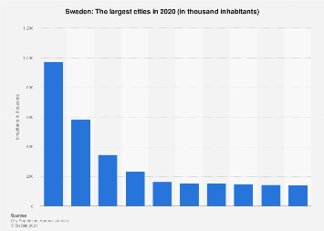
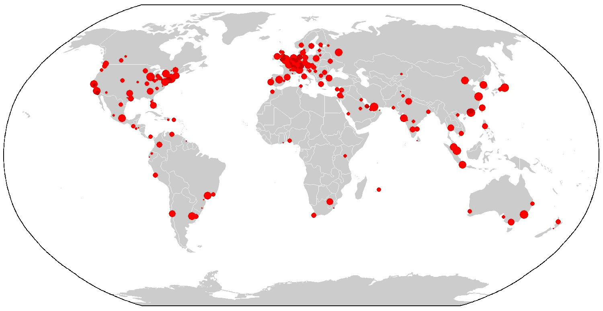
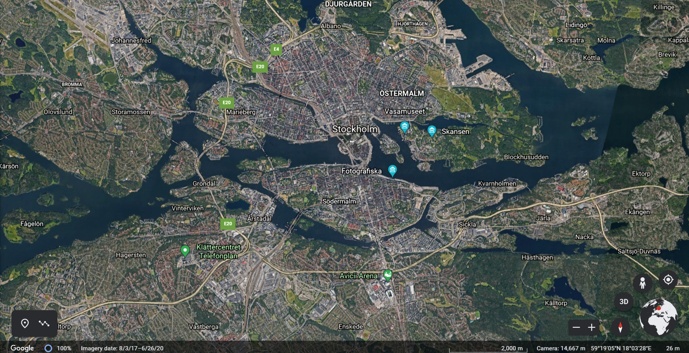
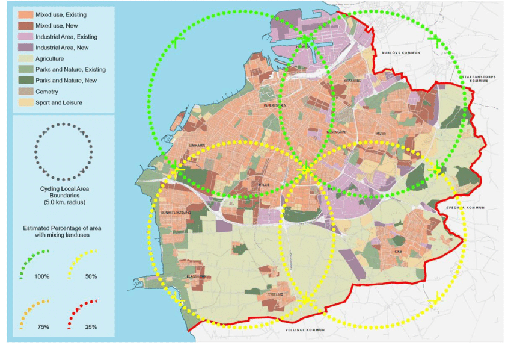
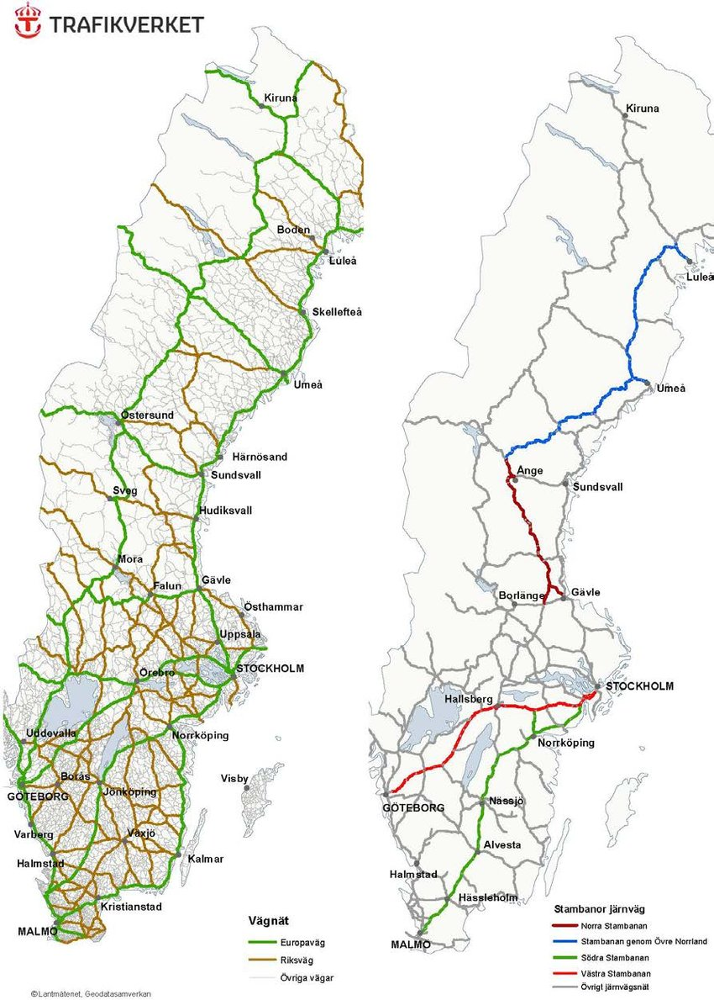

Megacities: A city with over 10 million population.
Metacities: A city with over 20 million population.
Sweden's largest city, Stockholm, only has a population of about 1.5 million making it rather small compared to the rest of the world. The next largest city is Göteburg with a population of nearly 600,000 making Stockholm a primate city. The third largest city in Sweden is Malamö with a population of about 300,000.
Primate City: The largest city in an area or country that has over double the population of the next most populous city. (Usually in developing countries)
Rank-Size Rule: A rule stating that a city's population can be shown as the city rank in its country for population, X, as the denomonator in a fraction making the equation look like this, population = largest city's population x 1/X.
Sweden, even though it is a developed country actually does have a primate city, Stockholm, which has far over double the next biggest. After this though, Sweden follows the rank-size rule pretty liberally.
World Cities: A world city is a hub of industry and economic development.
Swedens largest city is also a world city, Stockholm. It has all the qualifications for a world city, connections with other cities around the globe, good trade establised, and a powerful economy.
map of world cities \/
Sweden has its industial zone fairly scattered but mainly in the southwest portion just out from the CBD, the commercial area is obviously in the center and dispersing from there, and the Residential is all surrounding it and mainly in the south. The model it follows is some hybrid of the Sector model and Ring model. If I had to be faithful to one, I would say it is the Sector model.
Mixed Land-Use: Multiple types of land-use occuring in the same area. This can be seen in varing degrees throughout Sweden specifically in Malamö.
Walkability: The ability of an area or city to be walked through. Sweden in genral is a fairly dispersed country but even in most urban areas it is quite walkable.
Transport-Oriented Development: An urban planning idea that focuses on very good public transportation to allow for lots of walkability and low-density housing. While this concept is somewhat new it has shown elements in Sweden with Sweden's very extensive transit.
New Urbanism: A recent movement to make urban practices more sustainable and enviromentaly friendly. Sweden is not only doing this but is somewhat of a case study to people advocating for new urbanism/
Greenbelts: Sections of land in urban areas that are designated to be parks and Gardens. Greenbelts are also in Sweden including its capital Stockholm.
Infrastructure: All of a city's systems and commodities.
Infrastructure in Sweden began in the South where it is slightly warmer and more habitible and extended and dispersed from there. This spread also mimics the population distribution.
